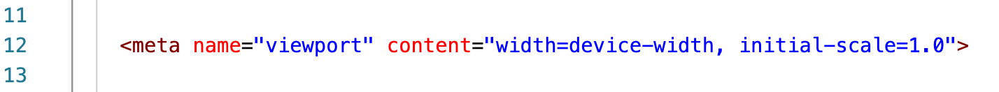
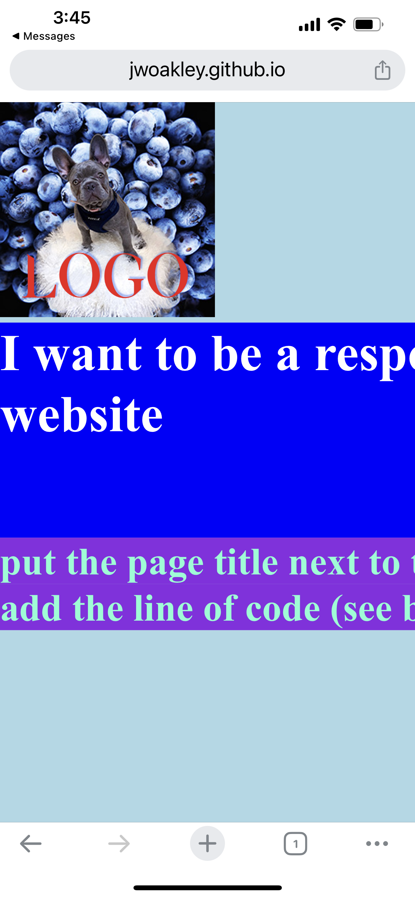
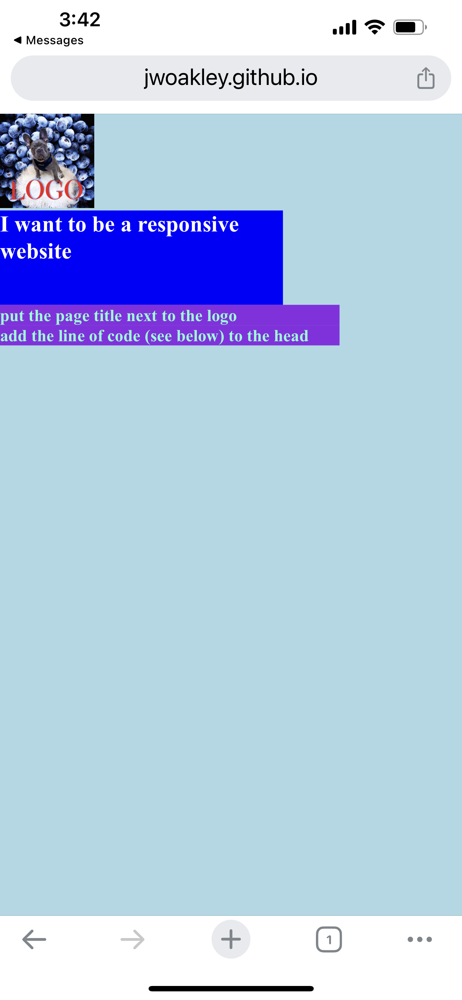
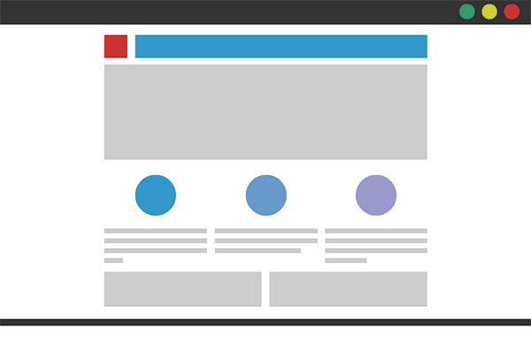
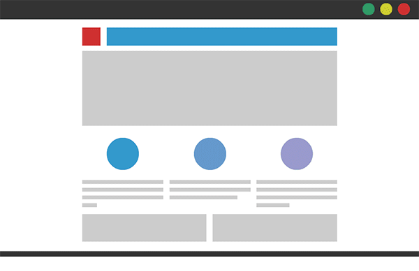
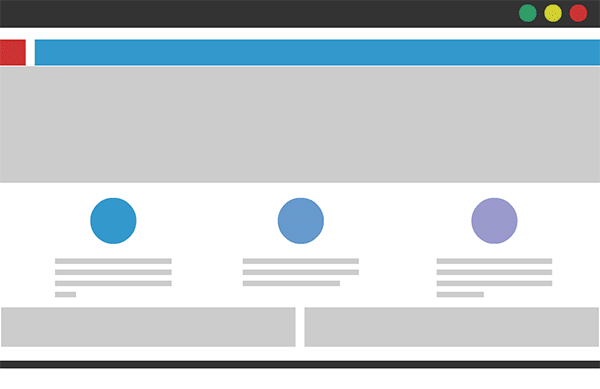
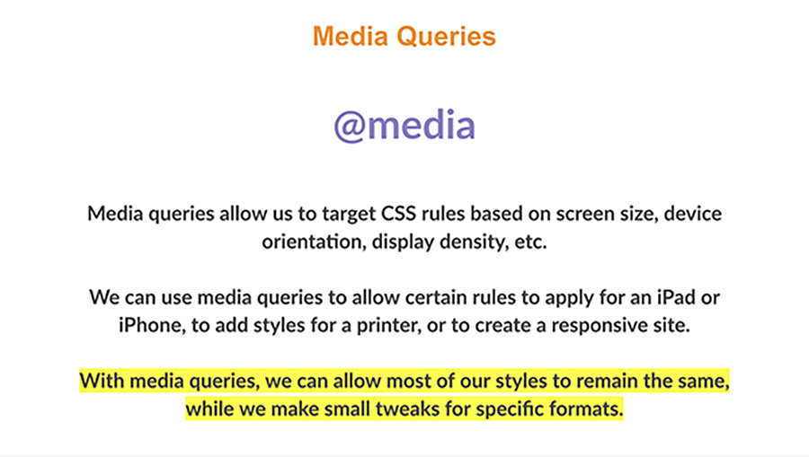
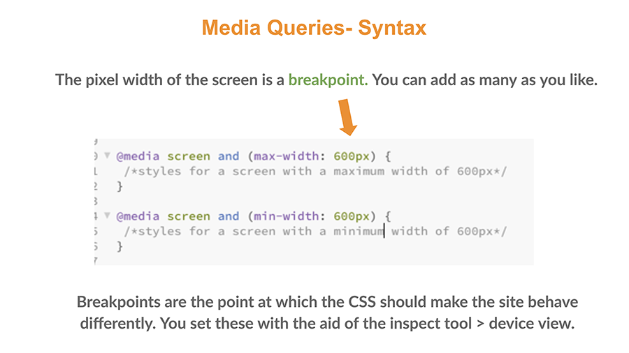
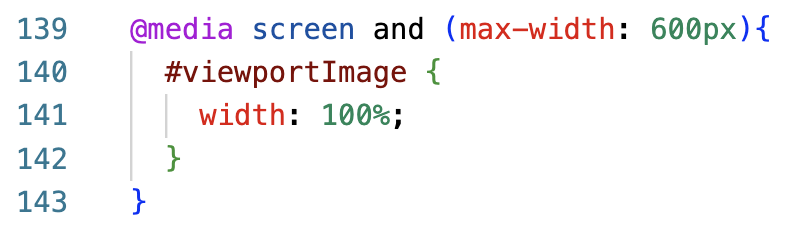

fixed layouts rely on a static container with a fixed pixel width. resizing browser has no impact

fluid layouts use relative units and the layout increases/decreases with the browser window. layout breaks at small scale

responsive web design is about using HTML and CSS to automatically resize, hide, shrink or enlarge a website to make it look good across all devices.


